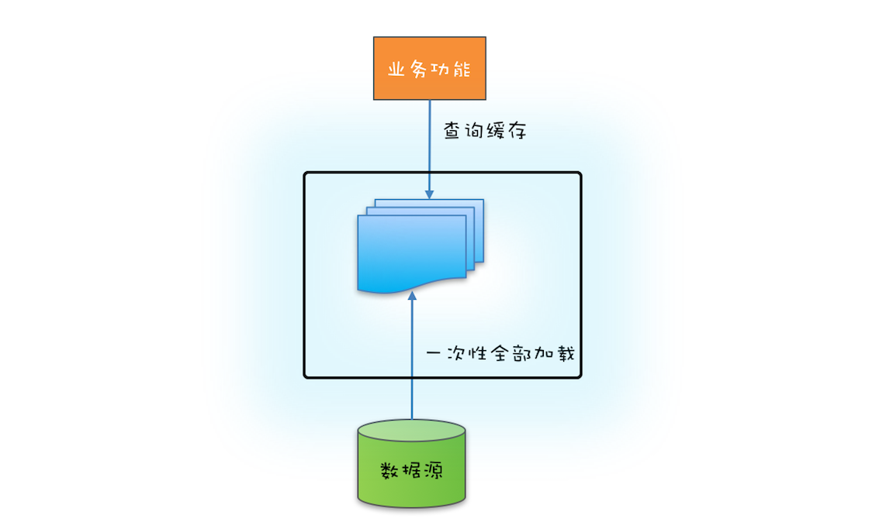
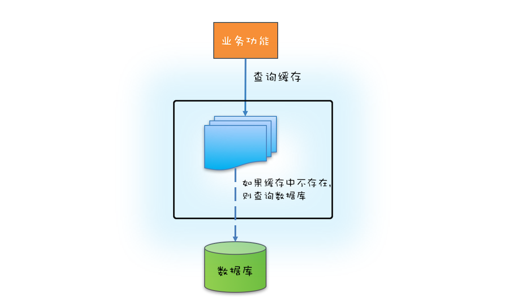

- 00 学习攻略 如何才能学好并发编程？.md
- 00 开篇词 你为什么需要学习并发编程？.md
- 01 可见性、原子性和有序性问题：并发编程Bug的源头.md
- 02 Java内存模型：看Java如何解决可见性和有序性问题.md
- 03 互斥锁（上）：解决原子性问题.md
- 04 互斥锁（下）：如何用一把锁保护多个资源？.md
- 05 一不小心就死锁了，怎么办？.md
- 06 用“等待-通知”机制优化循环等待.md
- 07 安全性、活跃性以及性能问题.md
- 08 管程：并发编程的万能钥匙.md
- 09 Java线程（上）：Java线程的生命周期.md
- 10 Java线程（中）：创建多少线程才是合适的？.md
- 11 Java线程（下）：为什么局部变量是线程安全的？.md
- 12 如何用面向对象思想写好并发程序？.md
- 13 理论基础模块热点问题答疑.md
- 14 Lock和Condition（上）：隐藏在并发包中的管程.md
- 15 Lock和Condition（下）：Dubbo如何用管程实现异步转同步？.md
- 16 Semaphore：如何快速实现一个限流器？.md
- 17 ReadWriteLock：如何快速实现一个完备的缓存？.md
- 18 StampedLock：有没有比读写锁更快的锁？.md
- 19 CountDownLatch和CyclicBarrier：如何让多线程步调一致？.md
- 20 并发容器：都有哪些“坑”需要我们填？.md
- 21 原子类：无锁工具类的典范.md
- 22 Executor与线程池：如何创建正确的线程池？.md
- 23 Future：如何用多线程实现最优的“烧水泡茶”程序？.md
- 24 CompletableFuture：异步编程没那么难.md
- 25 CompletionService：如何批量执行异步任务？.md
- 26 Fork_Join：单机版的MapReduce.md
- 27 并发工具类模块热点问题答疑.md
- 28 Immutability模式：如何利用不变性解决并发问题？.md
- 29 Copy-on-Write模式：不是延时策略的COW.md
- 3 个用户来信 打开一个新的并发世界.md
- 30 线程本地存储模式：没有共享，就没有伤害.md
- 31 Guarded Suspension模式：等待唤醒机制的规范实现.md
- 32 Balking模式：再谈线程安全的单例模式.md
- 33 Thread-Per-Message模式：最简单实用的分工方法.md
- 34 Worker Thread模式：如何避免重复创建线程？.md
- 35 两阶段终止模式：如何优雅地终止线程？.md
- 36 生产者-消费者模式：用流水线思想提高效率.md
- 37 设计模式模块热点问题答疑.md
- 38 案例分析（一）：高性能限流器Guava RateLimiter.md
- 39 案例分析（二）：高性能网络应用框架Netty.md
- 40 案例分析（三）：高性能队列Disruptor.md
- 41 案例分析（四）：高性能数据库连接池HiKariCP.md
- 42 Actor模型：面向对象原生的并发模型.md
- 43 软件事务内存：借鉴数据库的并发经验.md
- 44 协程：更轻量级的线程.md
- 45 CSP模型：Golang的主力队员.md
- 用户来信 真好，面试考到这些并发编程，我都答对了！.md
- 结束语 十年之后，初心依旧.md
17 ReadWriteLock：如何快速实现一个完备的缓存？
前面我们介绍了管程和信号量这两个同步原语在Java语言中的实现，理论上用这两个同步原语中任何一个都可以解决所有的并发问题。那Java SDK并发包里为什么还有很多其他的工具类呢？原因很简单：分场景优化性能，提升易用性。
今天我们就介绍一种非常普遍的并发场景：读多写少场景。实际工作中，为了优化性能，我们经常会使用缓存，例如缓存元数据、缓存基础数据等，这就是一种典型的读多写少应用场景。缓存之所以能提升性能，一个重要的条件就是缓存的数据一定是读多写少的，例如元数据和基础数据基本上不会发生变化（写少），但是使用它们的地方却很多（读多）。
针对读多写少这种并发场景，Java SDK并发包提供了读写锁——ReadWriteLock，非常容易使用，并且性能很好。
那什么是读写锁呢？
读写锁，并不是Java语言特有的，而是一个广为使用的通用技术，所有的读写锁都遵守以下三条基本原则：
- 允许多个线程同时读共享变量；
- 只允许一个线程写共享变量；
- 如果一个写线程正在执行写操作，此时禁止读线程读共享变量。
读写锁与互斥锁的一个重要区别就是读写锁允许多个线程同时读共享变量，而互斥锁是不允许的，这是读写锁在读多写少场景下性能优于互斥锁的关键。但读写锁的写操作是互斥的，当一个线程在写共享变量的时候，是不允许其他线程执行写操作和读操作。
快速实现一个缓存
下面我们就实践起来，用ReadWriteLock快速实现一个通用的缓存工具类。
在下面的代码中，我们声明了一个Cache
Cache这个工具类，我们提供了两个方法，一个是读缓存方法get()，另一个是写缓存方法put()。读缓存需要用到读锁，读锁的使用和前面我们介绍的Lock的使用是相同的，都是try{}finally{}这个编程范式。写缓存则需要用到写锁，写锁的使用和读锁是类似的。这样看来，读写锁的使用还是非常简单的。
class Cache<K,V> {
final Map<K, V> m =
new HashMap<>();
final ReadWriteLock rwl =
new ReentrantReadWriteLock();
// 读锁
final Lock r = rwl.readLock();
// 写锁
final Lock w = rwl.writeLock();
// 读缓存
V get(K key) {
r.lock();
try { return m.get(key); }
finally { r.unlock(); }
}
// 写缓存
V put(K key, V value) {
w.lock();
try { return m.put(key, v); }
finally { w.unlock(); }
}
}
如果你曾经使用过缓存的话，你应该知道使用缓存首先要解决缓存数据的初始化问题。缓存数据的初始化，可以采用一次性加载的方式，也可以使用按需加载的方式。
如果源头数据的数据量不大，就可以采用一次性加载的方式，这种方式最简单（可参考下图），只需在应用启动的时候把源头数据查询出来，依次调用类似上面示例代码中的put()方法就可以了。

缓存一次性加载示意图
如果源头数据量非常大，那么就需要按需加载了，按需加载也叫懒加载，指的是只有当应用查询缓存，并且数据不在缓存里的时候，才触发加载源头相关数据进缓存的操作。下面你可以结合文中示意图看看如何利用ReadWriteLock 来实现缓存的按需加载。

缓存按需加载示意图
实现缓存的按需加载
文中下面的这段代码实现了按需加载的功能，这里我们假设缓存的源头是数据库。需要注意的是，如果缓存中没有缓存目标对象，那么就需要从数据库中加载，然后写入缓存，写缓存需要用到写锁，所以在代码中的⑤处，我们调用了 w.lock() 来获取写锁。
另外，还需要注意的是，在获取写锁之后，我们并没有直接去查询数据库，而是在代码⑥⑦处，重新验证了一次缓存中是否存在，再次验证如果还是不存在，我们才去查询数据库并更新本地缓存。为什么我们要再次验证呢？
class Cache<K,V> {
final Map<K, V> m =
new HashMap<>();
final ReadWriteLock rwl =
new ReentrantReadWriteLock();
final Lock r = rwl.readLock();
final Lock w = rwl.writeLock();
V get(K key) {
V v = null;
//读缓存
r.lock(); ①
try {
v = m.get(key); ②
} finally{
r.unlock(); ③
}
//缓存中存在，返回
if(v != null) { ④
return v;
}
//缓存中不存在，查询数据库
w.lock(); ⑤
try {
//再次验证
//其他线程可能已经查询过数据库
v = m.get(key); ⑥
if(v == null){ ⑦
//查询数据库
v=省略代码无数
m.put(key, v);
}
} finally{
w.unlock();
}
return v;
}
}
原因是在高并发的场景下，有可能会有多线程竞争写锁。假设缓存是空的，没有缓存任何东西，如果此时有三个线程T1、T2和T3同时调用get()方法，并且参数key也是相同的。那么它们会同时执行到代码⑤处，但此时只有一个线程能够获得写锁，假设是线程T1，线程T1获取写锁之后查询数据库并更新缓存，最终释放写锁。此时线程T2和T3会再有一个线程能够获取写锁，假设是T2，如果不采用再次验证的方式，此时T2会再次查询数据库。T2释放写锁之后，T3也会再次查询一次数据库。而实际上线程T1已经把缓存的值设置好了，T2、T3完全没有必要再次查询数据库。所以，再次验证的方式，能够避免高并发场景下重复查询数据的问题。
读写锁的升级与降级
上面按需加载的示例代码中，在①处获取读锁，在③处释放读锁，那是否可以在②处的下面增加验证缓存并更新缓存的逻辑呢？详细的代码如下。
//读缓存
r.lock(); ①
try {
v = m.get(key); ②
if (v == null) {
w.lock();
try {
//再次验证并更新缓存
//省略详细代码
} finally{
w.unlock();
}
}
} finally{
r.unlock(); ③
}
这样看上去好像是没有问题的，先是获取读锁，然后再升级为写锁，对此还有个专业的名字，叫锁的升级。可惜ReadWriteLock并不支持这种升级。在上面的代码示例中，读锁还没有释放，此时获取写锁，会导致写锁永久等待，最终导致相关线程都被阻塞，永远也没有机会被唤醒。锁的升级是不允许的，这个你一定要注意。
不过，虽然锁的升级是不允许的，但是锁的降级却是允许的。以下代码来源自ReentrantReadWriteLock的官方示例，略做了改动。你会发现在代码①处，获取读锁的时候线程还是持有写锁的，这种锁的降级是支持的。
class CachedData {
Object data;
volatile boolean cacheValid;
final ReadWriteLock rwl =
new ReentrantReadWriteLock();
// 读锁
final Lock r = rwl.readLock();
//写锁
final Lock w = rwl.writeLock();
void processCachedData() {
// 获取读锁
r.lock();
if (!cacheValid) {
// 释放读锁，因为不允许读锁的升级
r.unlock();
// 获取写锁
w.lock();
try {
// 再次检查状态
if (!cacheValid) {
data = ...
cacheValid = true;
}
// 释放写锁前，降级为读锁
// 降级是可以的
r.lock(); ①
} finally {
// 释放写锁
w.unlock();
}
}
// 此处仍然持有读锁
try {use(data);}
finally {r.unlock();}
}
}
总结
读写锁类似于ReentrantLock，也支持公平模式和非公平模式。读锁和写锁都实现了 java.util.concurrent.locks.Lock接口，所以除了支持lock()方法外，tryLock()、lockInterruptibly() 等方法也都是支持的。但是有一点需要注意，那就是只有写锁支持条件变量，读锁是不支持条件变量的，读锁调用newCondition()会抛出UnsupportedOperationException异常。
今天我们用ReadWriteLock实现了一个简单的缓存，这个缓存虽然解决了缓存的初始化问题，但是没有解决缓存数据与源头数据的同步问题，这里的数据同步指的是保证缓存数据和源头数据的一致性。解决数据同步问题的一个最简单的方案就是超时机制。所谓超时机制指的是加载进缓存的数据不是长久有效的，而是有时效的，当缓存的数据超过时效，也就是超时之后，这条数据在缓存中就失效了。而访问缓存中失效的数据，会触发缓存重新从源头把数据加载进缓存。
当然也可以在源头数据发生变化时，快速反馈给缓存，但这个就要依赖具体的场景了。例如MySQL作为数据源头，可以通过近实时地解析binlog来识别数据是否发生了变化，如果发生了变化就将最新的数据推送给缓存。另外，还有一些方案采取的是数据库和缓存的双写方案。
总之，具体采用哪种方案，还是要看应用的场景。
课后思考
有同学反映线上系统停止响应了，CPU利用率很低，你怀疑有同学一不小心写出了读锁升级写锁的方案，那你该如何验证自己的怀疑呢？
欢迎在留言区与我分享你的想法，也欢迎你在留言区记录你的思考过程。感谢阅读，如果你觉得这篇文章对你有帮助的话，也欢迎把它分享给更多的朋友。
© 2019 - 2023 Liangliang Lee. Powered by gin and hexo-theme-book.